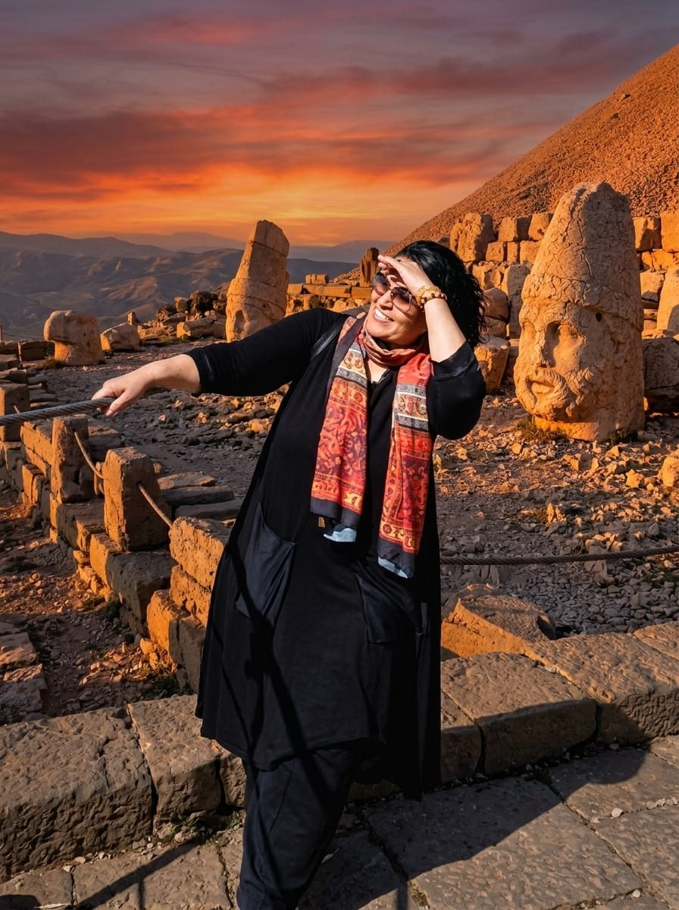

✦ Yol defteri
Gezdiğim Yerler
Türkiye'de ayak bastığım yerler. Renkli iller gezdiklerim, iğneler de ayrıca uğradığım ilçeler. Bir yerin üstüne gel ya da tıkla.
0il
0ilçe
%0Türkiye'nin
0yurt dışı ülke
Gezdim
Sırada
İlçe / şehir
Bütün duraklar
✦ Mutfaktan
Yemeklerim
Yaptığım, sevdiğim ve tekrar tekrar döndüğüm yemekler. Yakında tarifleriyle burada.
✦ Atölye
Eserlerim
Yazdıklarım, çektiklerim, ürettiklerim. Bu sayfa doldukça büyüyecek.

✦ Merhaba
Ben Demet
Bu sayfaya kendimi anlatan birkaç paragraf gelecek: nereliyim, ne yaparım, nelerden hoşlanırım.
Gezmeyi, yemek yapmayı ve bir şeyler üretmeyi seviyorum. Bu site de o üç şeyin bir defteri.